论文阅读——多模态情感分析（二）
ICASSP 2022 “SENTIMENT-AWARE AUTOMATIC SPEECH RECOGNITION PRE-TRAINING FOR ENHANCED SPEECH EMOTION RECOGNITION”
1.1 动机
1.1.1 emotion的定义
- 离散型：anger, disgust, fear, happiness, sadness, surprise六种基本类型，可进一步拓展到27种 [1]。
- 连续型：Activation (唤醒度), Valence (警觉度), Dominance (受支配程度) (AVD)空间中的一个点。
情绪的定义有很多，以下是两种方式
情感沙漏
情感沙漏[3]: Sensitivity, Aptitude, Attention and Pleasantness四种属性与Sentiment Polarity之间的关系 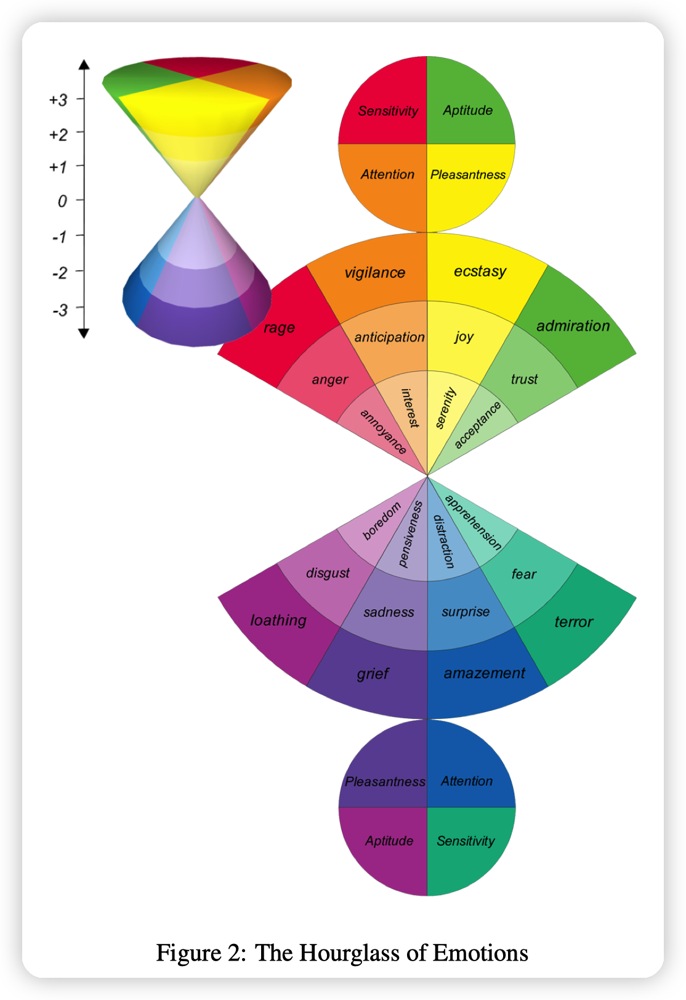
情绪轮，以下参考自[4]
离散情绪
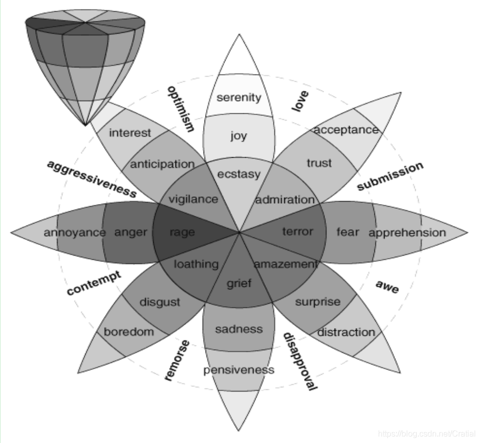 在情绪轮圆锥体底部的情绪更强烈，向上随着强度的降低，它们更难被区分开。
连续空间情绪
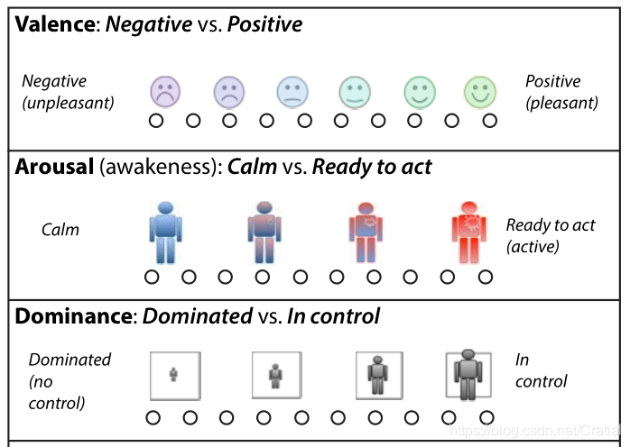
- Valence：消极（伤心）→积极（高兴）
- Arousal：平静→激动
- Dominance：受/被支配→在控制中 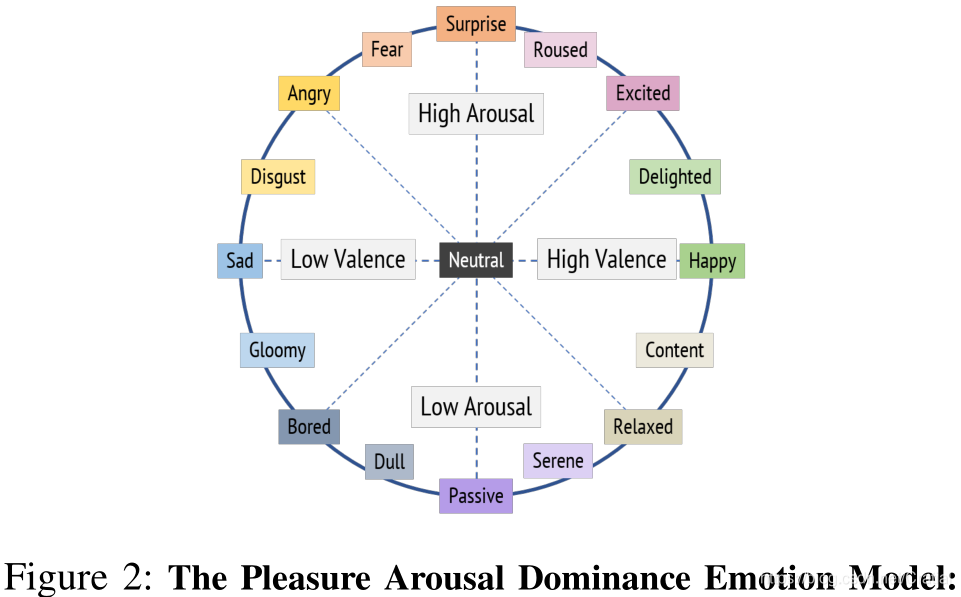 在Valence与Arousal维度上，连续情绪表示与离散情绪类别之间的关系
1.2.1 假设
作者认为语音emotion的Valence维与文本sentiment相关，并通过IEMOCAP数据集进行了验证，如表1。
- negative text-sentiment多与negative speech (sad, anger, frustrated) 相关
- positive text-sentiment多与positive speech (happy) 相关
- 将Sad, Frustrated, Anger映射为一类后，计算得到的Spearman相关系数$\rho$为0.22，为正相关 （-1 $\leq$ $\rho$ $\leq$ 1，$\pm1$时为完全相关。参考Pearson相关性系数衡量的标准，0.22属于弱正相关）
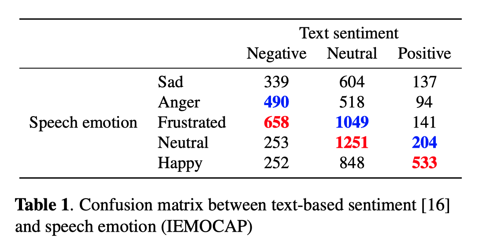
1.2 模型架构
1.2.1 预训练部分
包含语音识别和语音情感识别两个子任务，目标函数为：$L_{global} = L_{ASR} + \lambda L_{sentiment}$。作者在实验中将$\lambda$设置成了200。 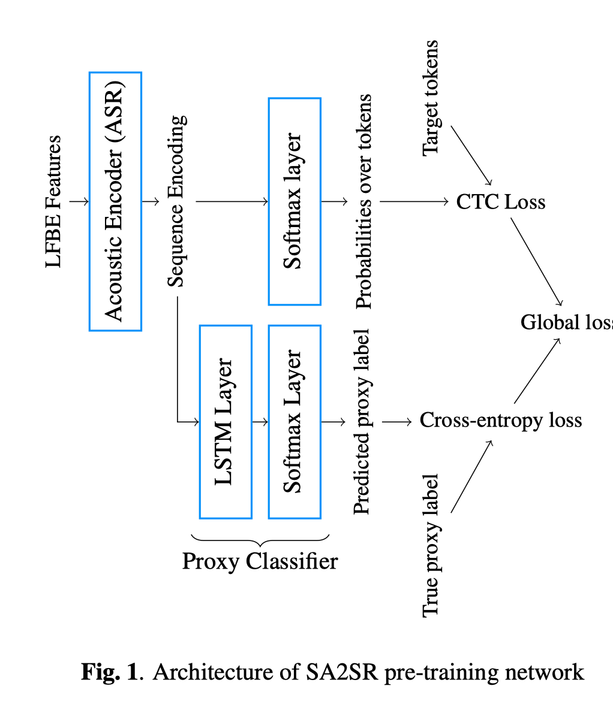
1.2.2 微调部分
目标函数为： $CCC(y, \hat y) = \frac{2Cov(y, \hat y)}{\sigma_{y}^{2} + \sigma_{\hat y}^{2} + (\mu_{y} - \mu_{\hat y})^{2}}$
$L_{CCC} = - \frac{1}{3}(CCC_{A} + CCC_{V} + CCC_{D})$ 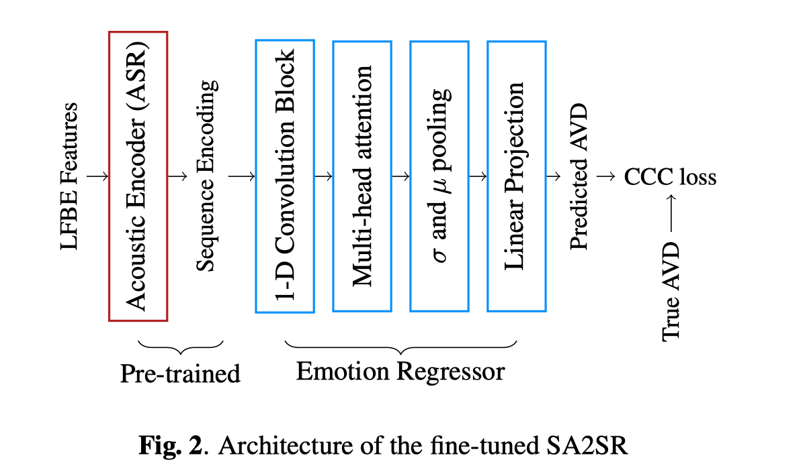
1.3 数据集
文章用来做语音emotion识别数据集是MSP-Podcast
1.3.1 数据来源和众包标注
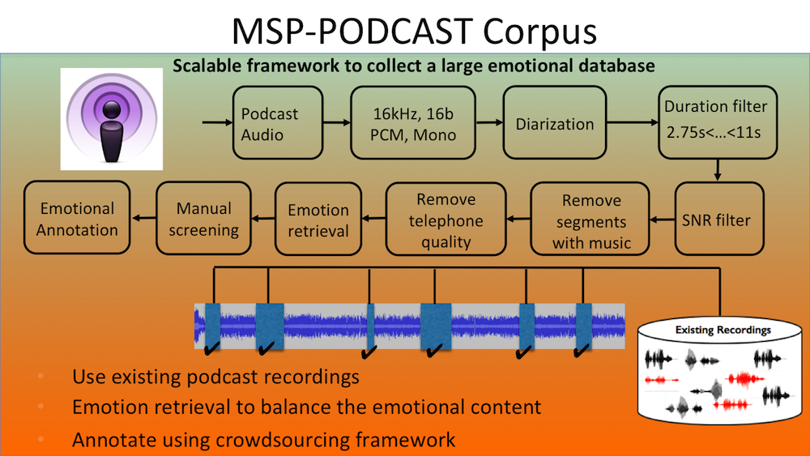
1.3.2 标注
- 基于属性的描述符(Activation, Dominance and Valence)
- 分类标签(anger, happiness, sadness, disgust, surprised, fear, contempt, neutral and other)
1.3.3 数据规模
语料库的收集是一个持续的过程。1.7版本有62140段语音(约100小时)
| 数据类别 | 数目 | 备注 |
|---|---|---|
| Train set | 38179 | |
| Development set | 7538 | 44 speakers (22 female and 22 male) |
| Test set 1 | 12902 | 60 speakers (30 female and 30 male) |
| Test set 2 | 3521 | randomly select from 100 podcasts. Segments from these podcasts are not included in any other partition. |
1.4 实验结果
ASR特征有效性
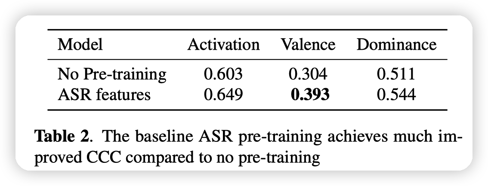
混合text-sentiment的ASR特征有效性
这里在自己的实验结果不如CPC时，作者自圆其说的方法（对valence维度更感兴趣）：“However, in this equal-weight multi-task emotion training setting, we see that activation and dominance dimension performs relatively weak compare to that of. We view this as an encouraging result as in many applications, valence (positive v.s. negative) is of most interest.” 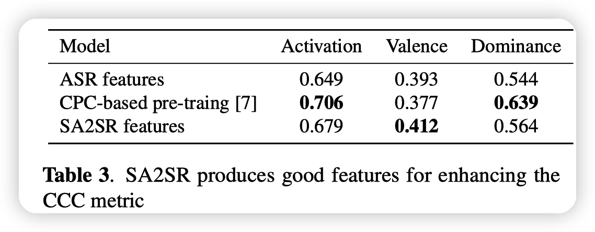
微调有效性
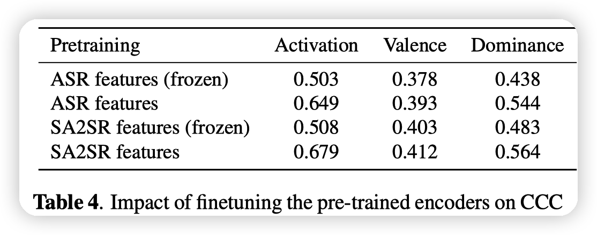
参考文献
[1] Self-report captures 27 distinct categories of emotion bridged by continuous gradients
[3] SenticNet: A Publicly Available Semantic Resource for Opinion Mining
[4] 情绪计算——“情绪空间”表达